2. Análisis exploratorio de datos#
Todo el análisis de este capítulo se realiza sobre el conjunto de entrenamiento (464.809 celdas). El conjunto de prueba permanece reservado y no interviene en ninguna decisión de preprocesamiento, selección de variables o interpretación. Cuando un procedimiento es computacionalmente costoso (información mutua, t-SNE, clustering), se usa una submuestra estratificada del entrenamiento con semilla fija, lo que se indica en cada caso.
Show code cell source
import warnings
warnings.filterwarnings("ignore")
import numpy as np
import pandas as pd
import matplotlib.pyplot as plt
import seaborn as sns
from scipy import stats
from sklearn.cluster import KMeans
from sklearn.decomposition import PCA
from sklearn.ensemble import IsolationForest
from sklearn.feature_selection import mutual_info_classif
from sklearn.linear_model import LinearRegression
from sklearn.manifold import TSNE
from sklearn.metrics import adjusted_rand_score, silhouette_score
from sklearn.preprocessing import StandardScaler
from _utils import (
BIN_COLS, CLASS_NAMES, CLASS_PALETTE, CLASS_SHORT, DISPLAY_NAMES, FEATURES, NUM_COLS,
RANDOM_STATE, SOIL_COLS, WILD_COLS, WILD_NAMES, load_covertype, soil_label,
split_covertype, stratified_sample, wilderness_label,
)
sns.set_theme(style="whitegrid", context="notebook")
pd.set_option("display.max_columns", 30)
df, X, y = load_covertype()
X_train, X_test, y_train, y_test = split_covertype(X, y)
train = X_train.assign(Cover_Type=y_train)
area = wilderness_label(X_train)
suelo = soil_label(X_train)
palette = [CLASS_PALETTE[k] for k in range(1, 8)]
2.1 Análisis de la variable objetivo#
Show code cell source
conteo = y_train.value_counts().sort_index()
tabla = pd.DataFrame(
{
"Cobertura": [CLASS_NAMES[k] for k in conteo.index],
"Celdas": conteo.values,
"Porcentaje (%)": (100 * conteo / conteo.sum()).round(2).values,
"Razón respecto a la mayoritaria": (conteo.max() / conteo).round(1).values,
},
index=conteo.index,
)
tabla.index.name = "Clase"
fig, ax = plt.subplots(figsize=(9, 4.2))
bars = ax.bar([CLASS_SHORT[k] for k in conteo.index], conteo.values, color=palette)
for bar, pct in zip(bars, tabla["Porcentaje (%)"]):
ax.annotate(f"{pct:.1f} %", (bar.get_x() + bar.get_width() / 2, bar.get_height()),
ha="center", va="bottom", fontsize=9, xytext=(0, 2), textcoords="offset points")
ax.set_title("Frecuencia de cada tipo de cobertura (entrenamiento)")
ax.set_ylabel("Número de celdas")
ax.set_xlabel("")
plt.xticks(rotation=20)
plt.tight_layout()
plt.show()
tabla
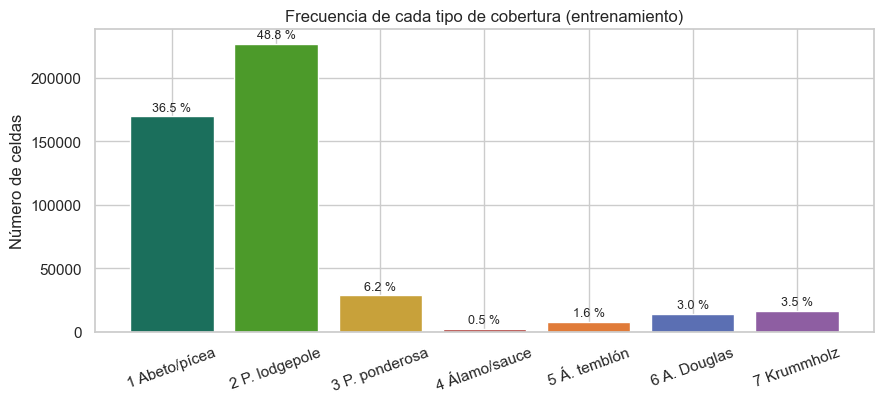
| Cobertura | Celdas | Porcentaje (%) | Razón respecto a la mayoritaria | |
|---|---|---|---|---|
| Clase | ||||
| 1 | Abeto/pícea (Spruce/Fir) | 169472 | 36.46 | 1.3 |
| 2 | Pino lodgepole | 226640 | 48.76 | 1.0 |
| 3 | Pino ponderosa | 28603 | 6.15 | 7.9 |
| 4 | Álamo/sauce (Cottonwood/Willow) | 2198 | 0.47 | 103.1 |
| 5 | Álamo temblón (Aspen) | 7594 | 1.63 | 29.8 |
| 6 | Abeto de Douglas | 13894 | 2.99 | 16.3 |
| 7 | Krummholz | 16408 | 3.53 | 13.8 |
La distribución de la variable objetivo está fuertemente desbalanceada. El pino lodgepole (48,8 %) y el abeto/pícea (36,5 %) suman el 85 % de las celdas, mientras que las cinco clases restantes se reparten el 15 %. La clase minoritaria, álamo/sauce, tiene 2.198 celdas en entrenamiento (0,47 %), 103 veces menos que la mayoritaria. Aun así, el número absoluto de casos minoritarios es suficiente para estimar un modelo, a diferencia de lo que ocurre en conjuntos pequeños con desbalance similar.
Comportamiento de la variable objetivo en el espacio. Aunque no hay coordenadas, el área silvestre permite ver cómo cambia la composición de la cobertura entre zonas:
Show code cell source
comp = pd.crosstab(area, y_train, normalize="index").loc[list(WILD_NAMES.values())]
fig, ax = plt.subplots(figsize=(9, 3.8))
left = np.zeros(len(comp))
for k in range(1, 8):
ax.barh(comp.index, comp[k], left=left, color=CLASS_PALETTE[k], label=CLASS_SHORT[k])
left += comp[k].values
ax.set_xlabel("Proporción de celdas del área")
ax.set_title("Composición de la cobertura por área silvestre (entrenamiento)")
ax.legend(bbox_to_anchor=(1.01, 1), loc="upper left", fontsize=8)
ax.set_xlim(0, 1)
plt.tight_layout()
plt.show()
pd.crosstab(area, y_train, margins=True, margins_name="Total").loc[list(WILD_NAMES.values()) + ["Total"]]
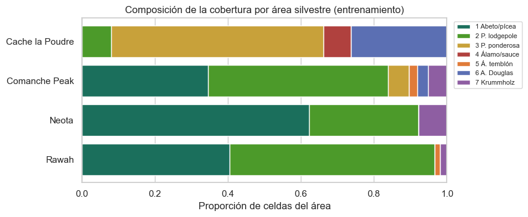
| Cover_Type | 1 | 2 | 3 | 4 | 5 | 6 | 7 | Total |
|---|---|---|---|---|---|---|---|---|
| row_0 | ||||||||
| Rawah | 84483 | 117006 | 0 | 0 | 2993 | 0 | 4039 | 208521 |
| Neota | 14841 | 7175 | 0 | 0 | 0 | 0 | 1854 | 23870 |
| Comanche Peak | 70148 | 100063 | 11378 | 0 | 4601 | 6082 | 10515 | 202787 |
| Cache la Poudre | 0 | 2396 | 17225 | 2198 | 0 | 7812 | 0 | 29631 |
| Total | 169472 | 226640 | 28603 | 2198 | 7594 | 13894 | 16408 | 464809 |
La composición cambia de forma drástica entre áreas. En Rawah, Neota y Comanche Peak dominan el abeto/pícea y el pino lodgepole, mientras que Cache la Poudre, el área más baja, tiene una composición completamente distinta: predominan el pino ponderosa y el abeto de Douglas, y es la única área donde aparece el álamo/sauce. Varias clases no existen en ciertas áreas (por ejemplo, ni el pino ponderosa ni el abeto de Douglas aparecen en Rawah o Neota).
Implicaciones para la evaluación y la validación:
El accuracy es engañoso: un clasificador que siempre prediga pino lodgepole obtiene cerca del 49 %. Se reportarán además el F1 macro (promedio simple del F1 de cada clase, que da el mismo peso a las clases minoritarias), la exactitud balanceada (promedio de la sensibilidad por clase), las métricas por clase y las curvas precisión-recall.
Todas las particiones y la validación cruzada deben ser estratificadas (
StratifiedKFold), para que cada pliegue contenga las siete clases en su proporción original.Conviene evaluar el ajuste con ponderación de clases (
class_weight="balanced"), que penaliza más los errores en las clases minoritarias.La fuerte dependencia entre área y clase obliga a revisar si el modelo generaliza a zonas no vistas (sección 2.7 y capítulo 3).
2.2 Análisis unidimensional#
Variables numéricas: estadísticos descriptivos#
Show code cell source
num = X_train[NUM_COLS]
desc = pd.DataFrame(
{
"Media": num.mean(),
"Mediana": num.median(),
"Desv. est.": num.std(),
"P1": num.quantile(0.01),
"P5": num.quantile(0.05),
"P25": num.quantile(0.25),
"P75": num.quantile(0.75),
"P95": num.quantile(0.95),
"P99": num.quantile(0.99),
"Mínimo": num.min(),
"Máximo": num.max(),
"Asimetría": num.skew(),
"Curtosis (exceso)": num.kurt(),
"Valores distintos": num.nunique(),
}
).round(2)
desc.index = [DISPLAY_NAMES[c] for c in desc.index]
desc
| Media | Mediana | Desv. est. | P1 | P5 | P25 | P75 | P95 | P99 | Mínimo | Máximo | Asimetría | Curtosis (exceso) | Valores distintos | |
|---|---|---|---|---|---|---|---|---|---|---|---|---|---|---|
| Elevación (m) | 2959.51 | 2996.0 | 280.03 | 2123.0 | 2405.0 | 2809.0 | 3164.0 | 3336.0 | 3439.0 | 1860 | 3858 | -0.82 | 0.75 | 1962 |
| Orientación (° azimut) | 155.83 | 127.0 | 111.98 | 1.0 | 12.0 | 58.0 | 261.0 | 344.0 | 356.0 | 0 | 360 | 0.40 | -1.22 | 361 |
| Pendiente (°) | 14.10 | 13.0 | 7.49 | 2.0 | 4.0 | 9.0 | 18.0 | 28.0 | 35.0 | 0 | 66 | 0.79 | 0.58 | 66 |
| Dist. horizontal a agua (m) | 269.35 | 218.0 | 212.39 | 0.0 | 30.0 | 108.0 | 384.0 | 684.0 | 938.0 | 0 | 1397 | 1.14 | 1.37 | 545 |
| Dist. vertical a agua (m) | 46.42 | 30.0 | 58.23 | -42.0 | -8.0 | 7.0 | 69.0 | 165.0 | 250.0 | -166 | 601 | 1.79 | 5.27 | 675 |
| Dist. a carreteras (m) | 2351.82 | 1999.0 | 1559.33 | 150.0 | 379.0 | 1106.0 | 3331.0 | 5484.0 | 6113.0 | 0 | 7117 | 0.71 | -0.39 | 5747 |
| Sombreado 9 a. m. (0-255) | 212.13 | 218.0 | 26.76 | 127.0 | 160.0 | 198.0 | 231.0 | 246.0 | 252.0 | 0 | 254 | -1.18 | 1.87 | 207 |
| Sombreado mediodía (0-255) | 223.32 | 226.0 | 19.77 | 162.0 | 186.0 | 213.0 | 237.0 | 250.0 | 254.0 | 0 | 254 | -1.06 | 2.08 | 182 |
| Sombreado 3 p. m. (0-255) | 142.55 | 143.0 | 38.27 | 41.0 | 78.0 | 119.0 | 168.0 | 204.0 | 226.0 | 0 | 254 | -0.28 | 0.39 | 255 |
| Dist. a puntos de incendio (m) | 1979.97 | 1710.0 | 1323.56 | 182.0 | 418.0 | 1024.0 | 2550.0 | 4938.0 | 6264.0 | 0 | 7172 | 1.29 | 1.65 | 5796 |
Distribuciones#
Show code cell source
fig, axes = plt.subplots(2, 5, figsize=(17, 6.5))
for ax, col in zip(axes.ravel(), NUM_COLS):
sns.histplot(num[col], bins=60, ax=ax, color="#3b7a57", kde=True, line_kws={"lw": 1})
ax.axvline(num[col].median(), color="#b0413e", ls="--", lw=1)
ax.set_title(DISPLAY_NAMES[col], fontsize=10)
ax.set_xlabel("")
ax.set_ylabel("")
fig.suptitle("Histogramas y densidades de las variables numéricas (línea roja: mediana)", y=1.01)
plt.tight_layout()
plt.show()
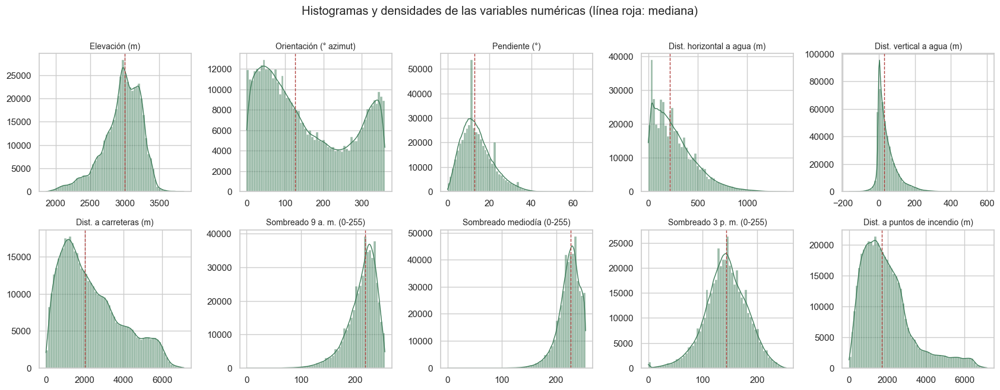
Show code cell source
fig = plt.figure(figsize=(11, 4.2))
ax1 = fig.add_subplot(1, 2, 1, projection="polar")
theta = np.deg2rad(num["Aspect"])
counts, edges = np.histogram(theta, bins=36, range=(0, 2 * np.pi))
ax1.bar(edges[:-1], counts, width=2 * np.pi / 36, align="edge", color="#3b7a57", edgecolor="white")
ax1.set_theta_zero_location("N")
ax1.set_theta_direction(-1)
ax1.set_title("Orientación de las laderas (histograma circular)", fontsize=10)
ax1.set_yticklabels([])
ax2 = fig.add_subplot(1, 2, 2)
z = (num - num.mean()) / num.std()
z.columns = [DISPLAY_NAMES[c] for c in z.columns]
sns.boxplot(data=z, orient="h", ax=ax2, fliersize=1, color="#9cc3a8")
ax2.set_title("Diagramas de caja (variables estandarizadas)", fontsize=10)
ax2.set_xlabel("Puntaje z")
plt.tight_layout()
plt.show()
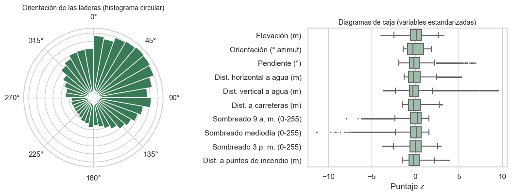
Pruebas de normalidad#
Se aplica la prueba de D’Agostino-Pearson sobre una submuestra aleatoria de 5.000 celdas. Con muestras de cientos de miles de observaciones cualquier prueba rechaza la normalidad ante desviaciones mínimas, por lo que el resultado se interpreta junto con la asimetría y la curtosis, y no de forma aislada.
Show code cell source
muestra = num.sample(5000, random_state=RANDOM_STATE)
normalidad = pd.DataFrame(
[(DISPLAY_NAMES[c], *stats.normaltest(muestra[c])) for c in NUM_COLS],
columns=["Variable", "Estadístico K²", "Valor p"],
).set_index("Variable")
normalidad["¿Se rechaza normalidad (α = 0,05)?"] = np.where(normalidad["Valor p"] < 0.05, "Sí", "No")
normalidad["Estadístico K²"] = normalidad["Estadístico K²"].round(1)
normalidad["Valor p"] = normalidad["Valor p"].map(lambda p: f"{p:.2e}")
normalidad
| Estadístico K² | Valor p | ¿Se rechaza normalidad (α = 0,05)? | |
|---|---|---|---|
| Variable | |||
| Elevación (m) | 528.4 | 1.78e-115 | Sí |
| Orientación (° azimut) | 5713.4 | 0.00e+00 | Sí |
| Pendiente (°) | 419.0 | 1.03e-91 | Sí |
| Dist. horizontal a agua (m) | 899.7 | 4.25e-196 | Sí |
| Dist. vertical a agua (m) | 1749.1 | 0.00e+00 | Sí |
| Dist. a carreteras (m) | 383.1 | 6.49e-84 | Sí |
| Sombreado 9 a. m. (0-255) | 1003.9 | 1.00e-218 | Sí |
| Sombreado mediodía (0-255) | 790.9 | 1.83e-172 | Sí |
| Sombreado 3 p. m. (0-255) | 55.5 | 9.03e-13 | Sí |
| Dist. a puntos de incendio (m) | 1123.0 | 1.39e-244 | Sí |
Interpretación de las variables numéricas:
Elevación. Tiene una masa principal entre 2.800 y 3.300 m, con dos picos cercanos (alrededor de 3.000 y 3.200 m), y una cola izquierda larga hacia los 1.860 m (asimetría −0,82). Esa cola corresponde a las zonas bajas de Cache la Poudre, donde se concentran las clases minoritarias.
Orientación. Es una variable circular: 0° y 360° son la misma dirección. El histograma lineal parece bimodal, con picos cerca de 40° y de 340°, pero el histograma circular muestra que ambos picos forman una sola concentración de laderas orientadas al norte y al noreste. Las laderas orientadas al sur y al suroeste son las menos frecuentes. Tratarla como lineal parte artificialmente esa concentración en dos, por lo que se transforma en seno y coseno (sección 2.9).
Distancias horizontales (a agua, carreteras y puntos de incendio). Tienen asimetría positiva (entre 0,7 y 1,3) y colas derechas largas; son candidatas a una transformación logarítmica.
Distancia vertical al agua. Es la variable más leptocúrtica (curtosis 5,3): la mayoría de las celdas está entre 0 y 70 m por encima de la fuente de agua, pero hay valores extremos de hasta 601 m y valores negativos de hasta −166 m.
Índices de sombreado. Tienen asimetría negativa (salvo el de las 3 p. m.), porque la mayoría de las laderas recibe mucha luz en verano y solo unas pocas quedan en sombra.
Pruebas de normalidad. Ninguna variable es normal. Esto no es un problema para la regresión logística, que no supone normalidad de las predictoras, pero sí justifica usar pruebas no paramétricas (Kruskal-Wallis) y correlación de Spearman en el análisis bidimensional.
Atípicos. Los diagramas de caja confirman lo discutido en la sección 1.8: las colas son largas pero continuas, sin valores aislados que sugieran errores de registro.
Variables categóricas#
Show code cell source
fig, axes = plt.subplots(1, 2, figsize=(16, 4.5), gridspec_kw={"width_ratios": [1, 3]})
area_counts = area.value_counts().loc[list(WILD_NAMES.values())]
axes[0].bar(area_counts.index, area_counts.values, color="#5b6fb3")
axes[0].set_title("Celdas por área silvestre")
axes[0].tick_params(axis="x", rotation=25)
for i, v in enumerate(area_counts.values):
axes[0].annotate(f"{100 * v / len(area):.1f} %", (i, v), ha="center", va="bottom", fontsize=9)
suelo_counts = X_train[SOIL_COLS].sum()
suelo_counts.index = [c.replace("Soil_Type_", "") for c in suelo_counts.index]
colors = ["#b0413e" if v / len(X_train) < 0.001 else "#3b7a57" for v in suelo_counts.values]
axes[1].bar(suelo_counts.index, suelo_counts.values, color=colors)
axes[1].set_yscale("log")
axes[1].axhline(0.001 * len(X_train), color="#b0413e", ls="--", lw=1)
axes[1].set_title("Celdas por tipo de suelo (escala logarítmica; en rojo, categorías con menos del 0,1 %)")
axes[1].set_xlabel("Tipo de suelo")
plt.tight_layout()
plt.show()
raras = suelo_counts[suelo_counts / len(X_train) < 0.001].sort_values()
raras_tabla = pd.DataFrame({"Celdas": raras, "Porcentaje (%)": (100 * raras / len(X_train)).round(3)})
raras_tabla["Clases presentes"] = [
", ".join(str(k) for k in sorted(y_train[X_train[f"Soil_Type_{s}"] == 1].unique())) for s in raras.index
]
raras_tabla.index = [f"Soil_Type_{s}" for s in raras_tabla.index]
raras_tabla
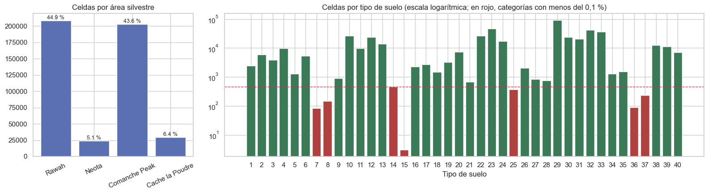
| Celdas | Porcentaje (%) | Clases presentes | |
|---|---|---|---|
| Soil_Type_15 | 3 | 0.001 | 6 |
| Soil_Type_7 | 83 | 0.018 | 2 |
| Soil_Type_36 | 90 | 0.019 | 1, 2, 7 |
| Soil_Type_8 | 149 | 0.032 | 1, 2 |
| Soil_Type_37 | 236 | 0.051 | 7 |
| Soil_Type_25 | 372 | 0.080 | 1, 2 |
| Soil_Type_14 | 457 | 0.098 | 3, 4, 6 |
Área silvestre (4 niveles). Rawah y Comanche Peak concentran cerca del 88 % de las celdas; Neota (5,1 %) y Cache la Poudre (6,4 %) están mucho menos representadas.
Tipo de suelo (40 niveles). La distribución es muy concentrada: el suelo 29 (familia Como–Legault) aparece en casi el 20 % de las celdas, mientras que siete tipos de suelo tienen menos del 0,1 % de las celdas. El caso extremo es el suelo 15, con solo 3 celdas en entrenamiento (y 3 en todo el conjunto).
Tratamiento de categorías raras. Se conservan como indicadoras independientes. Agruparlas en una categoría «otros» mezclaría suelos de composición muy distinta (los suelos raros aparecen en clases diferentes, como muestra la tabla), y la regularización L2 de la regresión logística ya encoge hacia cero los coeficientes estimados con pocos datos. Para los modelos de etapas posteriores se evaluará agrupar los suelos por familia ELU.
2.3 Análisis bidimensional#
Numéricas contra numéricas#
Show code cell source
etiquetas = [DISPLAY_NAMES[c] for c in NUM_COLS]
pearson = num.corr(method="pearson")
spearman = num.corr(method="spearman")
fig, axes = plt.subplots(1, 2, figsize=(17, 6.5))
mask = np.triu(np.ones_like(pearson, dtype=bool), k=1)
for ax, mat, titulo in [(axes[0], pearson, "Pearson"), (axes[1], spearman, "Spearman")]:
sns.heatmap(mat, mask=mask, annot=True, fmt=".2f", cmap="RdBu_r", vmin=-1, vmax=1, ax=ax,
xticklabels=etiquetas, yticklabels=etiquetas, cbar=ax is axes[1], annot_kws={"size": 8})
ax.set_title(f"Correlación de {titulo}")
plt.tight_layout()
plt.show()
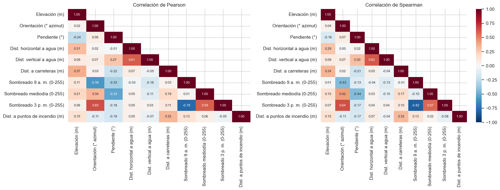
Show code cell source
pares = [
("Hillshade_9am", "Hillshade_3pm"),
("Aspect", "Hillshade_3pm"),
("Slope", "Hillshade_Noon"),
("Horizontal_Distance_To_Hydrology", "Vertical_Distance_To_Hydrology"),
("Elevation", "Horizontal_Distance_To_Roadways"),
("Elevation", "Slope"),
]
fig, axes = plt.subplots(2, 3, figsize=(16, 9.5), constrained_layout=True)
for ax, (a, b) in zip(axes.ravel(), pares):
hb = ax.hexbin(num[a], num[b], gridsize=60, bins="log", cmap="viridis", mincnt=1)
ax.set_xlabel(DISPLAY_NAMES[a])
ax.set_ylabel(DISPLAY_NAMES[b])
ax.set_title(f"Spearman = {spearman.loc[a, b]:.2f}", fontsize=10)
fig.colorbar(hb, ax=axes, shrink=0.6, label="log10(celdas)")
fig.suptitle("Relaciones entre pares de variables numéricas (hexbin, escala logarítmica)")
plt.show()
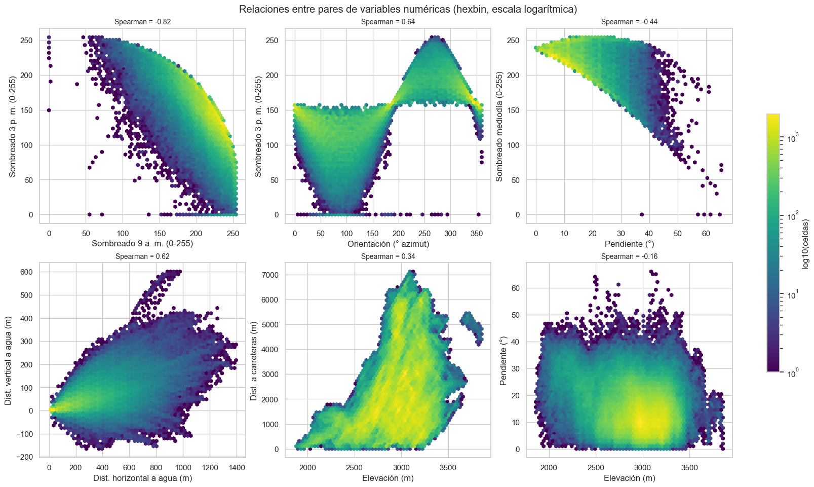
Interpretación:
Sombreado, orientación y pendiente forman un bloque redundante. El sombreado es una función determinística de la orientación, la pendiente y la posición del sol. Por eso el sombreado de las 9 a. m. y el de las 3 p. m. tienen correlación −0,78 (Pearson) y una relación curva muy nítida en el hexbin: una ladera iluminada en la mañana está en sombra en la tarde y viceversa. La orientación se relaciona con el sombreado de la tarde (0,65), y la pendiente con el del mediodía (−0,53).
Distancia horizontal y vertical al agua están moderadamente correlacionadas (0,61): cuanto más lejos está el agua, mayor suele ser el desnivel. Esto motiva construir la distancia euclidiana al agua como variable adicional.
La elevación es casi independiente del resto (correlaciones menores a 0,40), lo que anticipa que su información no es redundante.
Relaciones no lineales. Pearson y Spearman difieren en varios pares (por ejemplo, orientación y sombreado de las 9 a. m.: −0,58 frente a −0,43), lo que indica relaciones monótonas no lineales o no monótonas, como la forma de arco del par orientación–sombreado.
Multicolinealidad#
Show code cell source
vif = {}
for col in NUM_COLS:
otras = [c for c in NUM_COLS if c != col]
r2 = LinearRegression().fit(num[otras], num[col]).score(num[otras], num[col])
vif[DISPLAY_NAMES[col]] = 1 / (1 - r2)
vif = pd.Series(vif, name="VIF").sort_values(ascending=False).round(2).to_frame()
vif["Diagnóstico"] = np.select([vif["VIF"] > 10, vif["VIF"] > 5], ["Alta", "Moderada"], "Baja")
vif
| VIF | Diagnóstico | |
|---|---|---|
| Sombreado 3 p. m. (0-255) | 144.34 | Alta |
| Sombreado 9 a. m. (0-255) | 104.82 | Alta |
| Sombreado mediodía (0-255) | 38.15 | Alta |
| Pendiente (°) | 6.84 | Moderada |
| Orientación (° azimut) | 1.86 | Baja |
| Dist. vertical a agua (m) | 1.83 | Baja |
| Dist. horizontal a agua (m) | 1.81 | Baja |
| Elevación (m) | 1.34 | Baja |
| Dist. a carreteras (m) | 1.30 | Baja |
| Dist. a puntos de incendio (m) | 1.16 | Baja |
El factor de inflación de la varianza (VIF) confirma la redundancia del bloque de iluminación: los tres índices de sombreado tienen VIF entre 38 y 144, y la pendiente tiene un VIF moderado (6,8). Sin embargo, el sombreado no es una combinación lineal exacta de orientación y pendiente, sino una función trigonométrica, así que cada índice conserva algo de información propia.
Decisión: para el modelo base se conservan los tres índices, porque la regularización L2 estabiliza los coeficientes ante la colinealidad. La consecuencia práctica es que los coeficientes individuales del bloque de iluminación no deben interpretarse de forma aislada (capítulo 3). En etapas posteriores se evaluará sustituir el bloque por componentes principales o por las variables de orientación en seno y coseno.
Categóricas contra numéricas#
Show code cell source
vars_violin = [
"Elevation", "Horizontal_Distance_To_Roadways", "Horizontal_Distance_To_Fire_Points",
"Slope", "Horizontal_Distance_To_Hydrology", "Vertical_Distance_To_Hydrology",
]
plot_df = train.sample(60000, random_state=RANDOM_STATE)
plot_df["Clase"] = plot_df["Cover_Type"].map(CLASS_SHORT)
orden = [CLASS_SHORT[k] for k in range(1, 8)]
fig, axes = plt.subplots(3, 2, figsize=(16, 13))
for ax, col in zip(axes.ravel(), vars_violin):
sns.violinplot(data=plot_df, x="Clase", y=col, order=orden, palette=palette, ax=ax,
cut=0, linewidth=0.8, inner="quartile")
ax.set_title(DISPLAY_NAMES[col], fontsize=11)
ax.set_xlabel("")
ax.set_ylabel("")
ax.tick_params(axis="x", rotation=20, labelsize=9)
fig.suptitle("Distribución de las variables numéricas por clase (submuestra de 60.000 celdas)", y=1.0)
plt.tight_layout()
plt.show()
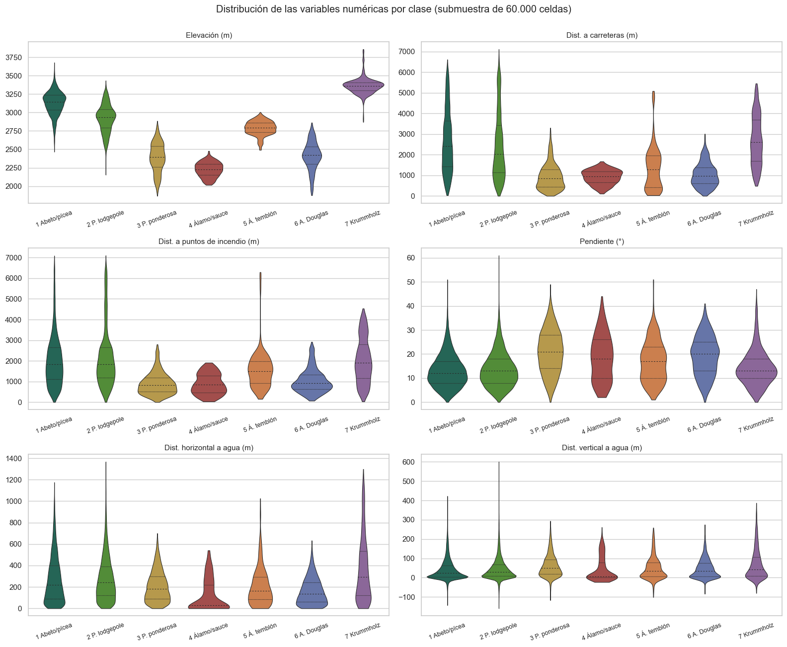
Para cuantificar las diferencias entre clases se usa la prueba de Kruskal-Wallis, alternativa no paramétrica al ANOVA de una vía, justificada por la ausencia de normalidad. Con \(n\) cercano a 465.000 cualquier diferencia resulta significativa, así que la prueba se acompaña del tamaño del efecto \(\varepsilon^2 = H / \frac{n^2 - 1}{n + 1}\), que se interpreta con los umbrales habituales: 0,01 pequeño, 0,08 moderado y 0,26 grande [Tomczak and Tomczak, 2014]. Los valores p se corrigen por comparaciones múltiples con el método de Holm.
Show code cell source
def holm(pvals):
"""Corrección de Holm-Bonferroni para una serie de valores p."""
p = np.asarray(pvals, dtype=float)
orden = np.argsort(p)
m = len(p)
ajust = np.empty(m)
acumulado = 0.0
for rank, idx in enumerate(orden):
acumulado = max(acumulado, min(1.0, (m - rank) * p[idx]))
ajust[idx] = acumulado
return ajust
n = len(X_train)
filas = []
for col in NUM_COLS:
H, p = stats.kruskal(*[num.loc[y_train == k, col] for k in range(1, 8)])
filas.append((DISPLAY_NAMES[col], H, p, H / ((n ** 2 - 1) / (n + 1))))
kw = pd.DataFrame(filas, columns=["Variable", "H de Kruskal-Wallis", "p", "ε²"]).set_index("Variable")
kw["p ajustado (Holm)"] = holm(kw["p"])
kw["Efecto"] = pd.cut(kw["ε²"], [-np.inf, 0.01, 0.08, 0.26, np.inf], labels=["Despreciable", "Pequeño", "Moderado", "Grande"])
kw = kw.sort_values("ε²", ascending=False)
kw["H de Kruskal-Wallis"] = kw["H de Kruskal-Wallis"].round(0)
kw["ε²"] = kw["ε²"].round(3)
kw[["p", "p ajustado (Holm)"]] = kw[["p", "p ajustado (Holm)"]].applymap(lambda v: f"{v:.1e}")
kw
| H de Kruskal-Wallis | p | ε² | p ajustado (Holm) | Efecto | |
|---|---|---|---|---|---|
| Variable | |||||
| Elevación (m) | 237619.0 | 0.0e+00 | 0.511 | 0.0e+00 | Grande |
| Dist. a carreteras (m) | 56907.0 | 0.0e+00 | 0.122 | 0.0e+00 | Moderado |
| Dist. a puntos de incendio (m) | 44640.0 | 0.0e+00 | 0.096 | 0.0e+00 | Moderado |
| Pendiente (°) | 26247.0 | 0.0e+00 | 0.056 | 0.0e+00 | Pequeño |
| Sombreado 9 a. m. (0-255) | 9643.0 | 0.0e+00 | 0.021 | 0.0e+00 | Pequeño |
| Dist. horizontal a agua (m) | 9596.0 | 0.0e+00 | 0.021 | 0.0e+00 | Pequeño |
| Sombreado mediodía (0-255) | 8657.0 | 0.0e+00 | 0.019 | 0.0e+00 | Pequeño |
| Dist. vertical a agua (m) | 6504.0 | 0.0e+00 | 0.014 | 0.0e+00 | Pequeño |
| Sombreado 3 p. m. (0-255) | 3077.0 | 0.0e+00 | 0.007 | 0.0e+00 | Despreciable |
| Orientación (° azimut) | 1624.0 | 0.0e+00 | 0.003 | 0.0e+00 | Despreciable |
Todas las diferencias son estadísticamente significativas después de la corrección de Holm, pero solo algunas son relevantes en magnitud:
La elevación tiene un efecto grande (ε² ≈ 0,51): por sí sola explica cerca de la mitad de la variabilidad de rangos entre clases. Los violines muestran un gradiente altitudinal claro, desde el álamo/sauce (mediana ≈ 2.230 m) y el pino ponderosa (≈ 2.400 m) hasta el abeto/pícea (≈ 3.150 m) y el krummholz (≈ 3.360 m), que es la vegetación achaparrada del límite superior del bosque. Este gradiente es coherente con la ecología de las Montañas Rocosas.
Las distancias a carreteras y a puntos de incendio tienen efectos moderados (ε² ≈ 0,12 y 0,10). Las clases de zonas bajas (3, 4 y 6) están más cerca de ambas, en buena medida porque las carreteras y los incendios históricos se concentran en los valles.
La pendiente y las distancias al agua tienen efectos pequeños, y la orientación y el sombreado, despreciables en la comparación global, aunque pueden aportar en combinación con otras variables.
Se observa solapamiento importante entre el abeto/pícea y el pino lodgepole en todas las variables, lo que anticipa que la confusión entre las dos clases mayoritarias será la principal fuente de error del modelo.
Categóricas contra categóricas#
Show code cell source
def cramer_v(a, b):
tabla = pd.crosstab(a, b)
chi2, p, dof, _ = stats.chi2_contingency(tabla)
m = tabla.values.sum()
r, k = tabla.shape
return chi2, dof, p, np.sqrt(chi2 / (m * (min(r, k) - 1)))
asociaciones = pd.DataFrame(
[
("Área silvestre × Cobertura", *cramer_v(area, y_train)),
("Tipo de suelo × Cobertura", *cramer_v(suelo, y_train)),
("Área silvestre × Tipo de suelo", *cramer_v(area, suelo)),
],
columns=["Par de variables", "χ²", "gl", "p", "V de Cramér"],
).set_index("Par de variables")
asociaciones["χ²"] = asociaciones["χ²"].round(0)
asociaciones["V de Cramér"] = asociaciones["V de Cramér"].round(3)
asociaciones["p"] = asociaciones["p"].map(lambda v: f"{v:.1e}")
asociaciones
| χ² | gl | p | V de Cramér | |
|---|---|---|---|---|
| Par de variables | ||||
| Área silvestre × Cobertura | 274996.0 | 18 | 0.0e+00 | 0.444 |
| Tipo de suelo × Cobertura | 610751.0 | 234 | 0.0e+00 | 0.468 |
| Área silvestre × Tipo de suelo | 655756.0 | 117 | 0.0e+00 | 0.686 |
Show code cell source
prop_suelo = pd.crosstab(suelo, y_train, normalize="index")
prop_suelo.columns = [CLASS_SHORT[k] for k in prop_suelo.columns]
prop_suelo.index = [f"Suelo {s} (n={int(c):,})".replace(",", ".") for s, c in suelo.value_counts().sort_index().items()]
fig, ax = plt.subplots(figsize=(10, 12))
sns.heatmap(prop_suelo, cmap="Greens", ax=ax, cbar_kws={"label": "Proporción de celdas del suelo"})
ax.set_title("Composición de la cobertura dentro de cada tipo de suelo")
ax.set_xlabel("")
ax.set_ylabel("")
plt.tight_layout()
plt.show()
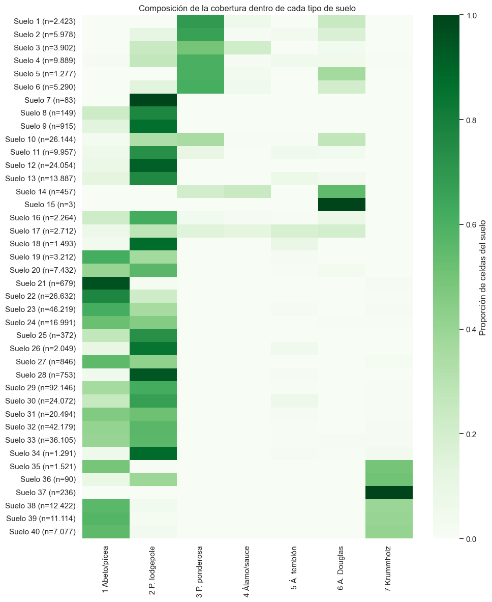
Las asociaciones del área silvestre (V ≈ 0,44) y del tipo de suelo (V ≈ 0,47) con la cobertura son fuertes, y en ambos casos la prueba χ² es significativa con valores p prácticamente nulos.
El mapa de calor muestra que muchos suelos son casi exclusivos de una o dos clases. Los suelos 35 a 40 (complejos Cryumbrepts, Leighcan–Moran y Moran, de alta montaña) se asocian con el krummholz y el abeto/pícea; los suelos 1 a 6 (familias Cathedral, Vanet y Ratake, de zonas bajas y rocosas) se asocian sobre todo con el pino ponderosa y, en menor medida, con el abeto de Douglas y el álamo/sauce; y los suelos 7, 12, 18, 26, 28 y 34 están dominados por el pino lodgepole. El abeto/pícea y el pino lodgepole comparten, en cambio, la mayoría de los suelos más frecuentes (22 a 33).
El área silvestre y el tipo de suelo están fuertemente asociados entre sí (V ≈ 0,69): cada área tiene su propio conjunto de suelos. Ambas variables comparten, por tanto, una parte importante de su información, lo que refuerza la idea de que el área actúa como un indicador geográfico general.
Predictoras contra variable objetivo: información mutua#
La información mutua mide la dependencia, lineal o no lineal, entre cada predictora y la clase. Se estima con el método de vecinos más cercanos sobre una submuestra estratificada de 60.000 celdas, tratando las indicadoras como variables discretas.
Show code cell source
Xs, ys = stratified_sample(X_train, y_train, 60000)
mi = mutual_info_classif(
Xs, ys, discrete_features=[c in BIN_COLS for c in FEATURES], random_state=RANDOM_STATE
)
mi = pd.Series(mi, index=FEATURES).sort_values(ascending=False)
top = mi.head(20)
fig, ax = plt.subplots(figsize=(9, 6))
colores = ["#3b7a57" if c in NUM_COLS else ("#5b6fb3" if c in WILD_COLS else "#c8a13a") for c in top.index]
ax.barh([DISPLAY_NAMES.get(c, c) for c in top.index][::-1], top.values[::-1], color=colores[::-1])
ax.set_xlabel("Información mutua (nats)")
ax.set_title("Las 20 predictoras con mayor información mutua con la cobertura\n(verde: numéricas; azul: área silvestre; ocre: suelo)")
plt.tight_layout()
plt.show()
print(f"Predictoras con información mutua menor a 0,001 nats: {(mi < 0.001).sum()} de {len(mi)}")
mi.head(10).rename(index=DISPLAY_NAMES).round(4).rename("Información mutua (nats)").to_frame()
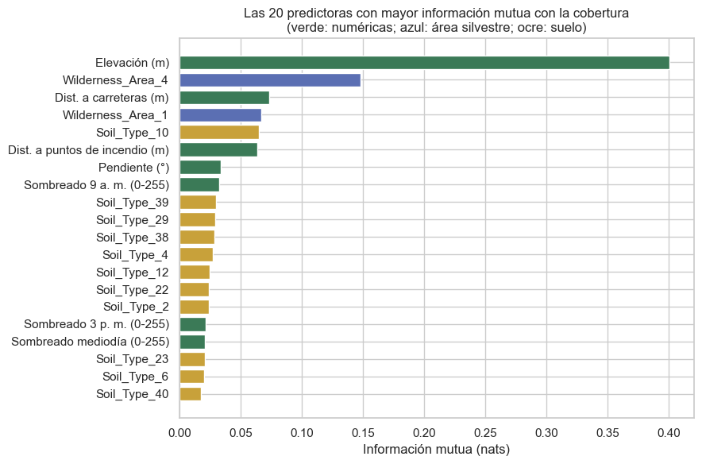
Predictoras con información mutua menor a 0,001 nats: 9 de 54
| Información mutua (nats) | |
|---|---|
| Elevación (m) | 0.4005 |
| Wilderness_Area_4 | 0.1478 |
| Dist. a carreteras (m) | 0.0733 |
| Wilderness_Area_1 | 0.0672 |
| Soil_Type_10 | 0.0652 |
| Dist. a puntos de incendio (m) | 0.0639 |
| Pendiente (°) | 0.0340 |
| Sombreado 9 a. m. (0-255) | 0.0326 |
| Soil_Type_39 | 0.0301 |
| Soil_Type_29 | 0.0293 |
La elevación es, por amplio margen, la predictora más informativa (cerca de 0,40 nats), casi el triple que la siguiente: el indicador del área Cache la Poudre (Wilderness_Area_4). Siguen la distancia a carreteras, el área Rawah (Wilderness_Area_1), el suelo 10 y la distancia a puntos de incendio. Este orden es coherente con los tamaños de efecto de Kruskal-Wallis y con la V de Cramér, lo que da solidez a la conclusión. Nueve predictoras tienen información mutua menor a 0,001 nats; se trata sobre todo de indicadoras de suelos raros, que afectan a muy pocas celdas.
Selección preliminar de variables. No se elimina ninguna predictora en esta etapa:
Las variables con poca asociación marginal (orientación, sombreado, suelos raros) pueden aportar en combinación con otras, y la regresión logística con regularización tolera bien predictoras poco informativas.
La información más relevante para el modelo base está en la elevación, las distancias a carreteras y a puntos de incendio, el área silvestre y el tipo de suelo.
La redundancia del bloque de iluminación se documenta, pero se maneja mediante regularización y no mediante eliminación.
2.4 Análisis multivariado#
Reducción de dimensionalidad: PCA#
El análisis de componentes principales se aplica a las diez variables numéricas estandarizadas. Las indicadoras binarias se excluyen porque el PCA sobre variables 0/1 dispersas refleja sobre todo su frecuencia y no su estructura.
Show code cell source
Z = StandardScaler().fit_transform(num)
pca = PCA(random_state=RANDOM_STATE).fit(Z)
var = pca.explained_variance_ratio_
fig, axes = plt.subplots(1, 2, figsize=(15, 4.5))
axes[0].bar(range(1, 11), var, color="#3b7a57", label="Individual")
axes[0].plot(range(1, 11), np.cumsum(var), "o-", color="#b0413e", label="Acumulada")
axes[0].axhline(0.9, ls="--", color="grey", lw=1)
axes[0].set_xlabel("Componente principal")
axes[0].set_ylabel("Proporción de varianza explicada")
axes[0].set_title("Varianza explicada por componente")
axes[0].legend()
cargas = pd.DataFrame(pca.components_[:5].T, index=[DISPLAY_NAMES[c] for c in NUM_COLS],
columns=[f"CP{i}" for i in range(1, 6)])
sns.heatmap(cargas, annot=True, fmt=".2f", cmap="RdBu_r", vmin=-1, vmax=1, ax=axes[1], annot_kws={"size": 8})
axes[1].set_title("Cargas de las cinco primeras componentes")
plt.tight_layout()
plt.show()
print("Varianza acumulada:", " | ".join(f"CP{i + 1}: {v:.1%}" for i, v in enumerate(np.cumsum(var))))
print(f"Componentes necesarias para explicar el 90 % de la varianza: {int(np.argmax(np.cumsum(var) >= 0.9)) + 1}")
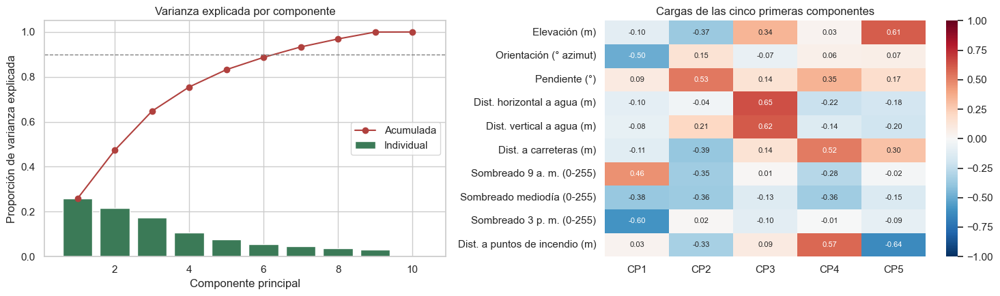
Varianza acumulada: CP1: 25.9% | CP2: 47.4% | CP3: 64.7% | CP4: 75.5% | CP5: 83.2% | CP6: 88.7% | CP7: 93.3% | CP8: 96.9% | CP9: 100.0% | CP10: 100.0%
Componentes necesarias para explicar el 90 % de la varianza: 7
Show code cell source
idx = plot_df.index
proy = pca.transform(StandardScaler().fit(num).transform(num.loc[idx]))[:, :2]
fig, ax = plt.subplots(figsize=(9, 6.5))
for k in [2, 1, 7, 3, 6, 5, 4]:
sel = plot_df["Cover_Type"].values == k
ax.scatter(proy[sel, 0], proy[sel, 1], s=3, alpha=0.35, color=CLASS_PALETTE[k], label=CLASS_SHORT[k])
ax.set_xlabel(f"CP1 ({var[0]:.1%})")
ax.set_ylabel(f"CP2 ({var[1]:.1%})")
ax.set_title("Proyección de las celdas en las dos primeras componentes (submuestra de 60.000)")
ax.legend(markerscale=4, fontsize=8, bbox_to_anchor=(1.01, 1), loc="upper left")
plt.tight_layout()
plt.show()
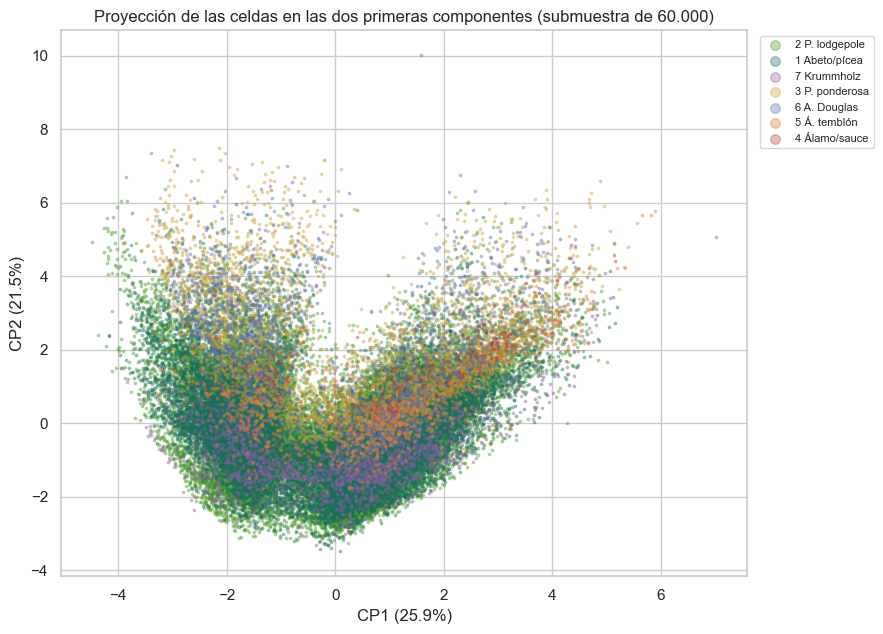
Visualización no lineal: t-SNE#
El t-SNE se usa solo como herramienta visual, no inferencial: las distancias entre grupos y el tamaño de los grupos en el mapa no tienen interpretación cuantitativa. Se aplica sobre 6.000 celdas estratificadas, con las variables numéricas estandarizadas y las indicadoras de área y suelo.
Show code cell source
Xt, yt = stratified_sample(X_train, y_train, 6000)
Zt = np.hstack([StandardScaler().fit_transform(Xt[NUM_COLS]), Xt[BIN_COLS].to_numpy()])
emb = TSNE(n_components=2, perplexity=40, init="pca", random_state=RANDOM_STATE).fit_transform(Zt)
fig, ax = plt.subplots(figsize=(9, 6.5))
for k in [2, 1, 7, 3, 6, 5, 4]:
sel = yt.values == k
ax.scatter(emb[sel, 0], emb[sel, 1], s=5, alpha=0.6, color=CLASS_PALETTE[k], label=CLASS_SHORT[k])
ax.set_title("Mapa t-SNE de 6.000 celdas (solo con fines exploratorios)")
ax.set_xticks([])
ax.set_yticks([])
ax.legend(markerscale=3, fontsize=8, bbox_to_anchor=(1.01, 1), loc="upper left")
plt.tight_layout()
plt.show()
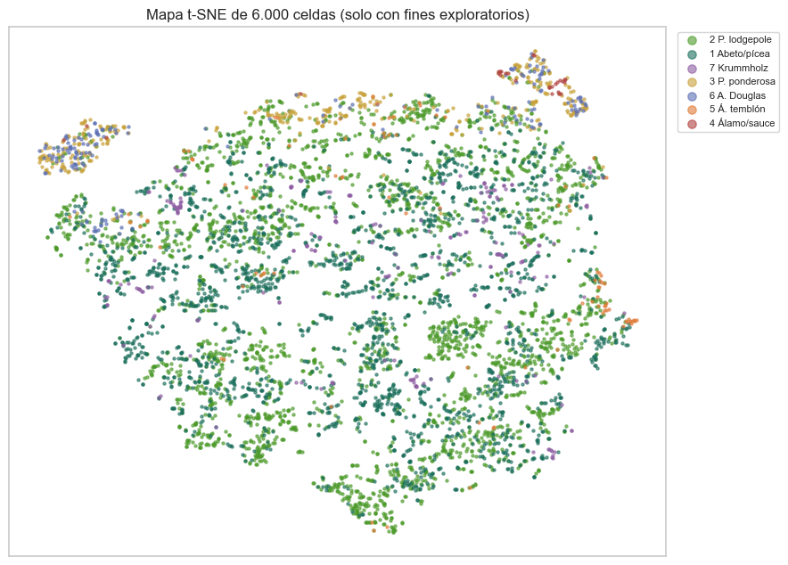
Valores atípicos multivariados#
Se usan dos criterios complementarios sobre las variables numéricas del entrenamiento:
Distancia de Mahalanobis, que supone una estructura elíptica de los datos. Se marca como atípica una celda cuya distancia al cuadrado supera el cuantil 0,999 de una distribución χ² con 10 grados de libertad.
Isolation Forest [Liu et al., 2008], que no supone ninguna forma de la distribución y aísla las observaciones fáciles de separar con particiones aleatorias. Se fija una contaminación del 1 %.
Show code cell source
centro = num.mean().to_numpy()
inv_cov = np.linalg.inv(np.cov(num.to_numpy(), rowvar=False))
dif = num.to_numpy() - centro
d2 = np.einsum("ij,jk,ik->i", dif, inv_cov, dif)
umbral = stats.chi2.ppf(0.999, df=len(NUM_COLS))
out_maha = d2 > umbral
iso = IsolationForest(n_estimators=200, contamination=0.01, random_state=RANDOM_STATE, n_jobs=-1)
out_iso = iso.fit_predict(num) == -1
resumen_out = pd.DataFrame(
{
"Mahalanobis": [out_maha.sum(), 100 * out_maha.mean()],
"Isolation Forest": [out_iso.sum(), 100 * out_iso.mean()],
"Ambos métodos": [(out_maha & out_iso).sum(), 100 * (out_maha & out_iso).mean()],
},
index=["Celdas atípicas", "Porcentaje (%)"],
).round(2)
display(resumen_out)
dist_clase = pd.DataFrame(
{
"Todas las celdas (%)": 100 * y_train.value_counts(normalize=True).sort_index(),
"Atípicas Mahalanobis (%)": 100 * y_train[out_maha].value_counts(normalize=True).reindex(range(1, 8), fill_value=0),
"Atípicas Isolation Forest (%)": 100 * y_train[out_iso].value_counts(normalize=True).reindex(range(1, 8), fill_value=0),
}
).round(2)
dist_clase.index = [CLASS_SHORT[k] for k in dist_clase.index]
dist_clase
| Mahalanobis | Isolation Forest | Ambos métodos | |
|---|---|---|---|
| Celdas atípicas | 8827.0 | 4649.0 | 3665.00 |
| Porcentaje (%) | 1.9 | 1.0 | 0.79 |
| Todas las celdas (%) | Atípicas Mahalanobis (%) | Atípicas Isolation Forest (%) | |
|---|---|---|---|
| 1 Abeto/pícea | 36.46 | 25.67 | 18.26 |
| 2 P. lodgepole | 48.76 | 38.48 | 23.04 |
| 3 P. ponderosa | 6.15 | 20.73 | 34.27 |
| 4 Álamo/sauce | 0.47 | 1.05 | 1.57 |
| 5 Á. temblón | 1.63 | 1.18 | 0.80 |
| 6 A. Douglas | 2.99 | 3.07 | 7.12 |
| 7 Krummholz | 3.53 | 9.81 | 14.95 |
La distancia de Mahalanobis marca el 1,9 % de las celdas y el Isolation Forest el 1,0 %; 3.665 celdas (0,8 %) son atípicas según ambos criterios, lo que indica un acuerdo alto entre métodos con supuestos muy distintos. El hallazgo más relevante es que las celdas atípicas no se distribuyen como el resto: están sobrerrepresentadas las clases de los dos extremos del gradiente altitudinal. El pino ponderosa pasa del 6 % de las celdas al 21 % (Mahalanobis) o al 34 % (Isolation Forest) de los atípicos; el krummholz, del 3,5 % al 10 % o al 15 %, y el álamo/sauce y el abeto de Douglas también aumentan su participación. Es decir, muchos «atípicos» son en realidad ejemplos de las clases minoritarias, que ocupan regiones periféricas del espacio de variables. Esto refuerza la decisión de no eliminar atípicos, porque hacerlo reduciría todavía más los ejemplos de las clases más difíciles.
Estructura de grupos: clustering exploratorio#
Se aplica k-means sobre las variables numéricas estandarizadas de una submuestra de 30.000 celdas, para valores de \(k\) entre 2 y 10. Se evalúa la cohesión con el coeficiente de silueta y la correspondencia con las clases reales con el índice de Rand ajustado (ARI).
Show code cell source
Xk, yk = stratified_sample(X_train, y_train, 30000)
Zk = StandardScaler().fit_transform(Xk[NUM_COLS])
res = []
modelos_k = {}
for k in range(2, 11):
km = KMeans(n_clusters=k, n_init=10, random_state=RANDOM_STATE).fit(Zk)
modelos_k[k] = km
res.append((k, silhouette_score(Zk, km.labels_, sample_size=10000, random_state=RANDOM_STATE),
adjusted_rand_score(yk, km.labels_)))
res = pd.DataFrame(res, columns=["k", "Silueta", "ARI con la cobertura"]).set_index("k").round(3)
fig, ax = plt.subplots(figsize=(8, 3.8))
ax.plot(res.index, res["Silueta"], "o-", label="Silueta", color="#3b7a57")
ax.plot(res.index, res["ARI con la cobertura"], "s-", label="ARI con la cobertura", color="#b0413e")
ax.set_xlabel("Número de grupos (k)")
ax.set_title("Calidad del agrupamiento k-means")
ax.legend()
plt.tight_layout()
plt.show()
res.T
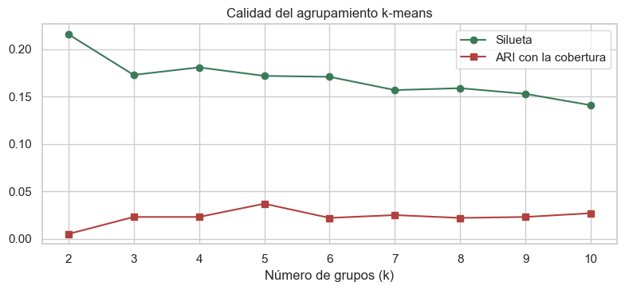
| k | 2 | 3 | 4 | 5 | 6 | 7 | 8 | 9 | 10 |
|---|---|---|---|---|---|---|---|---|---|
| Silueta | 0.216 | 0.173 | 0.181 | 0.172 | 0.171 | 0.157 | 0.159 | 0.153 | 0.141 |
| ARI con la cobertura | 0.005 | 0.023 | 0.023 | 0.037 | 0.022 | 0.025 | 0.022 | 0.023 | 0.027 |
Show code cell source
k_mejor = int(res["Silueta"].idxmax())
cruce = pd.crosstab(
pd.Series(modelos_k[7].labels_, name="Grupo (k = 7)"),
pd.Series(yk.map(CLASS_SHORT).to_numpy(), name="Cobertura"),
normalize="index",
).round(2)
print(f"k con mayor silueta: {k_mejor}. Se muestra k = 7 (igual al número de clases) para comparar con la cobertura.")
cruce
k con mayor silueta: 2. Se muestra k = 7 (igual al número de clases) para comparar con la cobertura.
| Cobertura | 1 Abeto/pícea | 2 P. lodgepole | 3 P. ponderosa | 4 Álamo/sauce | 5 Á. temblón | 6 A. Douglas | 7 Krummholz |
|---|---|---|---|---|---|---|---|
| Grupo (k = 7) | |||||||
| 0 | 0.46 | 0.46 | 0.02 | 0.00 | 0.01 | 0.01 | 0.03 |
| 1 | 0.52 | 0.40 | 0.00 | 0.00 | 0.00 | 0.00 | 0.08 |
| 2 | 0.29 | 0.41 | 0.14 | 0.02 | 0.04 | 0.07 | 0.03 |
| 3 | 0.43 | 0.45 | 0.01 | 0.00 | 0.01 | 0.00 | 0.09 |
| 4 | 0.29 | 0.56 | 0.08 | 0.01 | 0.02 | 0.03 | 0.01 |
| 5 | 0.26 | 0.73 | 0.00 | 0.00 | 0.00 | 0.00 | 0.01 |
| 6 | 0.20 | 0.41 | 0.22 | 0.00 | 0.01 | 0.14 | 0.01 |
Interpretación del análisis multivariado:
Dimensionalidad efectiva. Las diez variables numéricas no se comprimen en pocas componentes: se necesitan siete para explicar el 90 % de la varianza. La primera componente (26 %) es el bloque de iluminación (orientación y los tres índices de sombreado); la segunda (22 %) contrapone la pendiente a la elevación, la distancia a carreteras y el sombreado; la tercera (17 %) recoge las distancias horizontal y vertical al agua. La redundancia está concentrada en el bloque de iluminación y no se extiende al conjunto.
Las direcciones de mayor varianza no son las que separan las clases. En la proyección sobre las dos primeras componentes las siete clases se superponen casi por completo, porque esas componentes están dominadas por la geometría de la iluminación, que tiene una asociación despreciable con la cobertura (sección 2.3). La elevación, la variable más discriminante, casi no pesa en la primera componente y se reparte entre la segunda, la tercera y la quinta. Por eso el PCA no es una buena herramienta de reducción de dimensión para este problema supervisado.
Separabilidad de las clases. En el mapa t-SNE, que incluye las indicadoras de área y suelo, las clases de zonas bajas (pino ponderosa, abeto de Douglas y álamo/sauce) forman grupos separados en la periferia, apoyados en los suelos y el área característicos de Cache la Poudre. En cambio, el abeto/pícea y el pino lodgepole se entremezclan en toda la región central, y el krummholz y el álamo temblón aparecen dispersos dentro de ella. Las fronteras entre clases son curvas y entrelazadas, lo que anticipa que un modelo lineal tendrá un techo de desempeño limitado.
Subpoblaciones. No hay una estructura de grupos marcada: el coeficiente de silueta es bajo para todos los valores de \(k\) (el máximo, 0,22, se alcanza con \(k = 2\)) y el agrupamiento no recupera la cobertura (ARI menor a 0,04 para cualquier \(k\)). Con siete grupos, todos están dominados por la mezcla de abeto/pícea y pino lodgepole; solo dos concentran algo más de clases de zonas bajas (entre 14 % y 22 % de pino ponderosa y entre 7 % y 14 % de abeto de Douglas), y ninguno aísla una clase. Los datos forman un continuo en el espacio de las variables numéricas y la cobertura depende de combinaciones específicas de variables, incluidos el suelo y el área, que un modelo supervisado debe aprender.
Atípicos. Los atípicos multivariados se concentran en las clases minoritarias, por lo que se conservan.